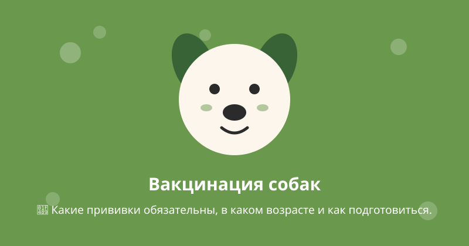

Вакцинация собак: календарь прививок от щенка до взрослой
Какие прививки обязательны, в каком возрасте и как подготовиться.

Основные вакцины
Обязательная прививка — от бешенства. Комплексные вакцины защищают от чумы плотоядных, парвовирусного энтерита, гепатита, парагриппа и лептоспироза. По показаниям врач добавит защиту от пироплазмоза — особенно в регионах с клещами.
Календарь щенка
Первая комплексная прививка — в 8–9 недель, ревакцинация — через 3–4 недели. От бешенства прививают примерно в 3 месяца. До окончания карантина щенка нельзя выводить на улицу и знакомить с чужими собаками.
Взрослая собака
Ревакцинация комплексной вакциной и от бешенства — ежегодно. Отметки проставляют в ветпаспорт: без актуальной прививки от бешенства собаку не пустят в поезд или самолёт и не допустят на выставки.
Подготовка к прививке
За 10–14 дней до вакцинации собаку обрабатывают от глистов и блох. В день прививки животное должно быть здоровым: нормальная температура, аппетит и поведение. После укола понаблюдайте за собакой 30 минут в клинике — аллергические реакции проявляются именно в этот период.